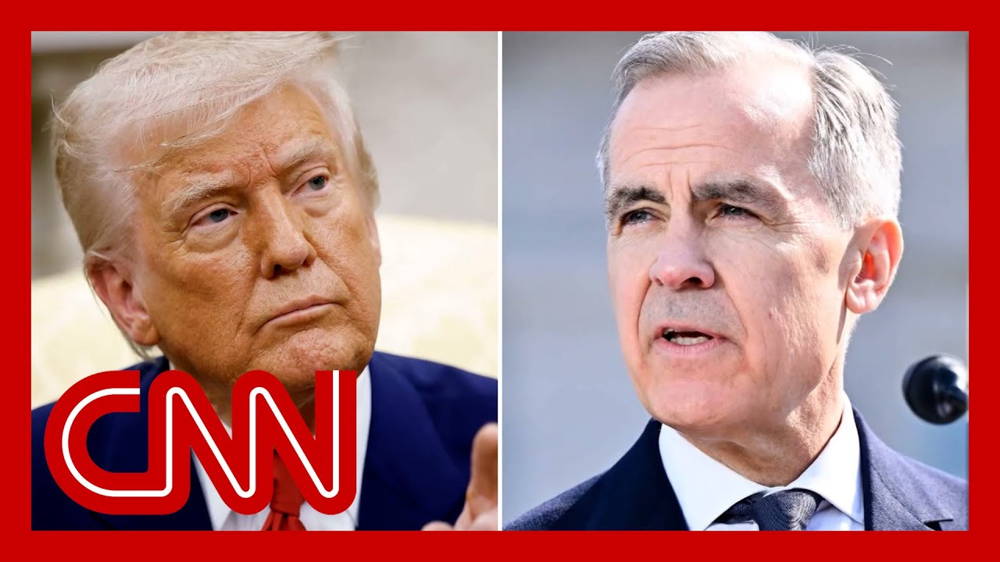

【CNN News 特朗普：加拿大新税是对美国的“公然攻击” 20250629】
Summary: President Trump abruptly ended trade talks with Canada over its new digital services tax, calling it a direct attack on the US and vowing to impose tariffs. Despite initial market drops, major indices rebounded to record highs. Analysts debate the political and economic implications of the move.
摘要： 特朗普总统因加拿大新数字服务税突然终止贸易谈判，称这是对美国的直接攻击，并誓言征收关税。尽管市场最初下跌，但主要指数反弹至历史新高。分析人士对这一举动的政治和经济影响展开辩论。

⏱️ Estimated Reading Time: 15 min
📚 六级生词 📚 雅思生词 📚 托福生词 📚 专八生词 📚 SAT生词 📚 考研生词 📚 GRE生词 📚 高考生词
Tonight, President Trump says trade talks between the White House and Canada are over.
今晚，特朗普总统表示白宫与加拿大之间的贸易谈判已经结束。
The President abruptly pulling the plug on negotiations with a top buyer, the top buyer, of US goods.
总统突然终止与美国商品的最大买家加拿大的谈判。
The President angry about Canada's new digital services tax.
总统对加拿大新数字服务税感到愤怒。
The President, as you see right there, calling it, quote, a direct and blatant attack on our country.
总统称其为“对我国直接且公然的攻击”。
He went on to write that the United States will let Canada know the tariff that they will be paying to do business with the United States of America within the next seven-day period.
他接着写道，美国将在未来七天内告知加拿大其与美国做生意需支付的关税。
You can see right here all three major stock exchanges reacting to the President's Post in real time.
你可以看到三大证券交易所对总统帖文的实时反应。
The Dow, the S&P, and the NASDAQ briefly dropped on the news.
道指、标普和纳斯达克指数因这一消息短暂下跌。
But look at that. Not only a sharp rebound, but the NASDAQ and the S&P closing at all time highs, even as this tariff fight drags on, Wall Street rolls on.
但看，不仅出现大幅反弹，纳斯达克和标普指数还创下历史新高，尽管关税战持续，华尔街仍在前进。
My political sources are here.
我的政治消息人士在这里。
Karen Finney, the former communications director for the Democratic National Committee and the Republican Strategist, sure Michael Singleton.
民主党全国委员会前通讯主任凯伦·芬尼和共和党策略师迈克尔·辛格尔顿。
Karen Michael on the one hand, Karen Opposite the Tax.
凯伦和迈克尔一方反对税收。
We know the President. You punch him. He punches back what he perceives as a punch.
我们了解总统。你打他，他会回击他认为的攻击。
However, the markets are rebounding.
然而，市场正在反弹。
The President still has issues out there with consumer confidence.
总统在消费者信心方面仍存在问题。
And what Americans think about, you know, right track, wrong track.
以及美国人对国家走向的看法。
Want to do this again now?
现在想再来一次吗？
Yeah, look, I think the market is trending in the right direction.
是的，我认为市场正朝着正确方向发展。
I understand, and Karen and I were talking about this.
我理解，凯伦和我讨论过这一点。
I understand why the President would be somewhat frustrated with the tax from the Canadians.
我理解总统为何对加拿大的税收感到沮丧。
But I would also imagine the Canadians probably want to protect their own growing technology sector.
但我也认为加拿大可能想保护其不断发展的科技行业。
I would, however, want the Canadians to partner with us and buy chips from Nvidia versus chips from Hawaii and the Chinese.
然而，我希望加拿大与我们合作，购买英伟达的芯片，而非来自夏威夷和中国的芯片。
And so these are some of the global things that I'm thinking about.
这些是我正在考虑的一些全球性问题。
So I'd probably go back to the conversation if I'm advised in the President and say, let's figure out a way to add a minimum lower of the tax so that the U.S. companies greater benefit.
因此，如果我向总统建议，可能会回到对话中，提议找到一种方法降低最低税率，使美国公司获益更多。
But they didn't do it in talks.
但他们在谈判中未这样做。
So that's parts interesting.
这部分很有趣。
He did seem to be starting to have a decent relationship with the new Prime Minister.
他似乎开始与新总理建立良好关系。
But let me take the contrarian argument.
但让我提出相反观点。
They just announced a new tech retroactive to what, 2022, on some of our biggest companies, right?
他们刚刚宣布对2022年以来的一些美国大公司征收追溯性科技税，对吧？
We're talking about Apple here.
我们谈论的是苹果。
We're talking about Google here.
我们谈论的是谷歌。
We're talking about Amazon here.
我们谈论的是亚马逊。
We're talking about Microsoft here.
我们谈论的是微软。
So forget the name Trump.
所以忘掉特朗普这个名字。
Forget that he's a Republican.
忘掉他是共和党人。
Shouldn't any American President say, oh no, those are big players in my economy.
难道任何一位美国总统不该说，这些是我国经济的重要参与者？
Of course they should.
当然应该。
But the problem is that we're supposed to be having these 90 deals in 90 days.
但问题是我们本应在90天内达成90项协议。
But I think they've gotten about two of them.
但我认为他们只完成了大约两项。
So the problem is the context we find ourselves in.
问题在于我们当前的处境。
Yes, you would want an American President fighting that fight.
是的，你会希望美国总统为此而战。
But as we've seen, the volatility in the market, the lack of consumer confidence, I mean, this anxiety that people are feeling is not going to go away.
但正如我们所看到的，市场波动、消费者信心不足，人们的这种焦虑不会消失。
And if we hear the President, which I expect we will, early next week, come out swinging.
如果总统下周初发表强硬言论（我预计会如此）。
What is that going to do to the markets?
这对市场会有什么影响？
Because, you know, again, he could have said we're going to continue to talk.
因为他本可以说我们将继续谈判。
That's on his way.
这是他的风格。
So of course he's making a big deal about it.
所以他当然会对此大做文章。
We'll see how they react.
我们将看到他们如何反应。
When this became a big problem, turmoil in the markets last time, there was the 90-day pause.
上次这成为大问题时，市场动荡，出现了90天的暂停。
Now we're at 12 days away from the end of the 90-day pause.
现在我们距离90天暂停结束还有12天。
And the President says.
总统表示。
Which countries of any are close to agreements with the Ministry?
有哪些国家接近与商务部达成协议？
Well, that's an interesting question.
这是个有趣的问题。
We've made a deal with China.
我们已与中国达成协议。
We've made a deal with probably four or five different countries with the UK.
我们可能与英国等四五个国家达成了协议。
But, you know, we have 200 countries, you could say 200 countries plus.
但你知道，我们有200个国家，甚至更多。
We can't do that.
我们无法全部完成。
So at a certain point over the next week and a half or so, or maybe before, we're going to send out a letter.
因此在接下来一周半左右或更早，我们将发出一封信。
We've talked to many other countries.
我们已与许多其他国家交谈。
And we're just going to tell them what they have to pay to do business in the United States.
我们将告诉他们与美国做生意需支付的费用。
And it's going to go very quickly.
这将很快进行。
Maybe a foolish question because this is the way he is.
也许这是个愚蠢的问题，因为这就是他的风格。
This is the way he acts about this and the people around him say it works.
他这样行事，他身边的人说这有效。
You threaten your bully, you threaten your get back.
你威胁别人，别人也会威胁你。
But given what happened last time, with his own approval rating, with the turmoil in the markets and everything, don't you want to do this in private?
但鉴于上次发生的事，考虑到他的支持率、市场动荡等，你难道不想私下处理吗？
Yeah, look, I think the President is very sensitive to market ups and downs.
是的，我认为总统对市场波动非常敏感。
Obviously, he cares a lot about that.
显然，他非常在意这一点。
I actually think, though, John, that this is perhaps a better approach.
不过约翰，我认为这可能是更好的方式。
And I was stating this about a month ago that I would have preference the President to go to multiple countries and say, hey, this is a baseline for the United States in terms of trade.
大约一个月前我曾表示，我更希望总统去多个国家说，这是美国的贸易底线。
That's all just agreed to this and figured out versus peace, milk, on country by country.
大家同意这一点并解决，而不是逐个国家谈判。
It's two hundred countries.
这是两百个国家。
That's a lot of countries to try to figure out.
要弄清楚这么多国家很困难。
I actually support the effort of saying, hey, let's go to everybody and say, this is our baseline number.
我实际上支持告诉大家这是我们的底线数字的做法。
Let's agree and let's move on with business.
让我们达成一致并继续业务。
What?
什么？
They said they were going to get 90 deals done in 90 days.
他们说要在90天内完成90项协议。
And we knew when they said it, that was not true.
我们知道他们说的不真实。
Not going to likely to happen.
不太可能实现。
And here we are.
现在我们在这里。
And he said they've gotten four or five.
他说他们完成了四五项。
And now he's saying, oh, well, really, it's 200 and then that's a lot.
现在他说实际上有200个国家，这太多了。
If you're covering campaigns like I do or if you're planning campaigns and advising candidates like you do, one of the big challenges is which data point do we look at?
如果你像我一样报道竞选活动，或像你一样策划竞选活动并为候选人提供建议，一大挑战是我们该看哪个数据点？
Which data point there's conflicting data points?
哪些数据点存在冲突？
Which one do we think is going to matter closer to the election?
我们认为哪个数据点更接近选举时重要？
You're a Democrat here.
你是民主党人。
But the President did launch military action against Iran.
但总统确实对伊朗采取了军事行动。
There were no troops involved.
没有军队参与。
The ceasefire appears to be holding.
停火似乎维持着。
The markets did set some records today.
今天市场确实创下一些纪录。
A good week for the President after a stretch in which Republicans were getting nervous about the midterm climate.
在共和党人对中期选举氛围感到紧张后，这是总统的好一周。
Well, it's interesting because also obviously today the President announced it from the Supreme Court.
有趣的是，总统今天还从最高法院宣布了这一消息。
He's feeling emboldened.
他感到更有底气。
And yet, I was looking at real clear politics averages.
然而，我查看了真实清晰政治的平均数据。
We've seen several weeks, not just one outlier poll.
我们看到几周的数据，不仅是一个异常值。
Several weeks of polling where his approval rates are going down.
几周的民调显示他的支持率在下降。
His handling of the economy, immigration, foreign policy, underwater Quinnipiac poll this week showed people said they don't like the Marines being in California.
他对经济、移民、外交政策的处理，本周昆尼皮亚克民调显示人们不喜欢海军陆战队在加州。
They don't like the National Guard.
他们不喜欢国民警卫队。
They want a path to citizenship for people who've been here.
他们希望为长期居住者提供公民身份途径。
So the problem that he has and the opportunity that Democrats have is to offer a different vision and to make the point.
因此他面临的问题和民主党的机会是提供不同愿景并阐明观点。
It's not just a check on power, but like let's make sure we're getting it right.
不仅是制衡权力，还要确保我们做对了。
Because one of the things that we're seeing is people are not happy with the way things are going.
因为我们看到的是人们对现状不满。
And he never talks about the economy, which is the number one issue.
而他从不谈论经济这一首要问题。
President Trump immediately ending trade talks with Canada, vowing to announce in the coming days a new tariff rate on the top buyer of American goods, Canada.
特朗普总统立即终止与加拿大的贸易谈判，誓言在未来几天宣布对美国商品最大买家加拿大的新关税税率。
CNN's Kristen Homes is at the White House.
CNN的克里斯汀·霍姆斯在白宫。
Kristen, why is President Trump suddenly ending these trade talks?
克里斯汀，特朗普总统为何突然终止这些贸易谈判？
Well, it's all about this digital tax, Jake.
杰克，这都是因为数字税。
I mean, essentially, Canada has decided to go forward with a digital tax on American companies that would go into effect on June 30th.
加拿大决定对美国公司征收数字税，将于6月30日生效。
Now, this has actually been, they've gone forward with this since last Friday, but it appears to have just gotten on President Trump's radar.
实际上他们上周五就已推进此事，但似乎刚刚引起特朗普总统的注意。
And in fact, in addition to these digital big companies having to pay this tax, they'd have to actually have to pay retro tax as well.
事实上，除了这些大型数字公司需支付此税，他们还需支付追溯税。
So they'd owe billions of dollars when the time comes on June 30th.
因此到6月30日，他们将欠下数十亿美元。
So this was clearly brought to President Trump's attention.
这显然引起了特朗普总统的注意。
He said he was going to cut off all ties with trade talks with Canada.
他表示将切断与加拿大贸易谈判的所有联系。
Here's what he said.
以下是他的原话。
Then we're foolish to do it.
那么我们这样做是愚蠢的。
So I said we're going to stop all negotiations with Canada right now until they straighten out their act.
因此我说我们将立即停止与加拿大的所有谈判，直到他们改正行为。
We have all the cards.
我们掌握所有牌。
We do a lot of business with Canada, but relatively little.
我们与加拿大有很多生意往来，但相对较少。
They do most of their businesses with us.
他们的大部分生意与我们进行。
And when you have that circumstance, you treat people better.
在这种情况下，你应该更好地对待别人。
So a couple of things to know here.
因此有几件事需要了解。
One is that this is pretty surprising, given what we saw just a week and a half ago, when President Trump was at the G7 sitting next to Prime Minister Mark Carney of Canada.
一是这相当令人惊讶，因为就在一周半前，我们看到特朗普总统在G7峰会上与加拿大总理马克·卡尼坐在一起。
And they seem to be getting along.
他们似乎相处融洽。
They said that they had differences on trade, but that they were going to work through them, and they really thought that they could make a deal before July with each country getting a little bit of what they want.
他们表示在贸易上有分歧，但会努力解决，并认为可以在7月前达成协议，让双方各有所得。
So this is clearly a 180 there, particularly in Trump's direction.
因此这显然是180度转变，尤其是特朗普的态度。
We also know that Trump administration officials had urged Carney not to go forward with this digital tax.
我们还知道特朗普政府官员曾敦促卡尼不要推进数字税。
Obviously, there he went forward with it anyway.
显然，他还是推进了。
And just one thing to note, President Trump in a true social post earlier said that going forward with this digital services tax was a direct and blatant attack on our country, Jake.
还有一点需要注意，特朗普总统早些时候在社交媒体上表示推进数字服务税是对我国的直接且公然的攻击，杰克。